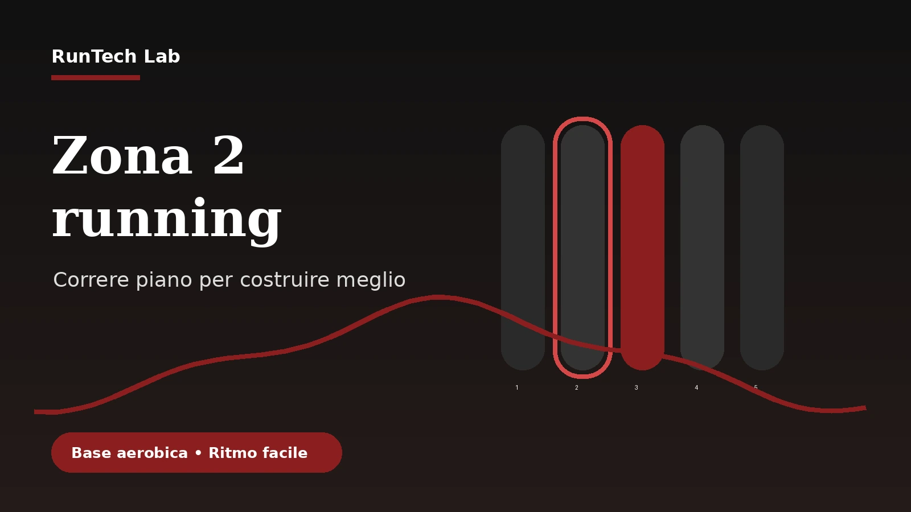

In breve
- La Zona 2 è un’intensità facile, sostenibile e prevalentemente aerobica.
- Non coincide sempre con un passo preciso: dipende da forma, caldo, fatica, percorso e recupero.
- Per molti runner amatoriali è utile perché permette di correre più spesso senza accumulare troppa stanchezza.
- Il test più semplice è riuscire a parlare a frasi brevi senza ansimare.
- Il verdetto RunTech Lab: la Zona 2 è potente se resta semplice; diventa inutile se la trasformi in ossessione numerica.
Cos’è davvero la Zona 2
Nel linguaggio dell’allenamento, la Zona 2 indica un’intensità facile, sotto controllo, in cui il corpo lavora soprattutto in modo aerobico. Non è una passeggiata, ma non è nemmeno un medio mascherato. Dovresti sentire di correre, ma senza quella pressione continua che ti porta ad accorciare il respiro dopo pochi minuti.
La definizione precisa cambia in base al metodo usato: percentuale della frequenza cardiaca massima, soglia, potenza, percezione dello sforzo o zone impostate dal tuo orologio. Per un runner amatoriale, però, il punto non è litigare con il numero esatto. Il punto è imparare a riconoscere un’intensità che puoi ripetere spesso.
Come riconoscerla senza laboratorio
Il modo più pratico è il talk test. Se riesci a parlare a frasi brevi, sei probabilmente vicino a un’intensità facile. Se riesci a cantare, forse stai andando troppo piano. Se riesci solo a rispondere a monosillabi, quasi sicuramente sei già oltre. Questo sistema non è perfetto, ma è molto utile perché ti costringe ad ascoltare il corpo.
Anche la frequenza cardiaca può aiutare, ma va interpretata. Il battito sale con caldo, stress, caffeina, sonno scarso e disidratazione. Se guardi solo il numero, rischi di rallentare troppo in alcune giornate o spingere troppo in altre. La combinazione migliore è usare orologio e sensazioni insieme.
Quando inserirla nella settimana
| Tipo di uscita | Uso della Zona 2 | Obiettivo |
|---|---|---|
| Lento facile | Ideale | Costruire base aerobica e chilometri senza stress eccessivo. |
| Lungo | Molto utile | Tenere lo sforzo controllato quando la durata aumenta. |
| Recupero | Utile con prudenza | Muoversi senza trasformare il recupero in un altro allenamento duro. |
| Ripetute | No, non è il focus | Le ripetute lavorano su intensità diverse. |
Perché aiuta i runner amatoriali
Molti runner corrono quasi sempre troppo forte nei lenti e troppo piano nei lavori di qualità. Il risultato è una zona grigia continua: uscite abbastanza dure da stancare, ma non abbastanza specifiche da migliorare davvero velocità o soglia. La Zona 2 aiuta a separare meglio gli stimoli. I giorni facili restano facili, così i giorni intensi possono essere fatti meglio.
Il beneficio più concreto è la continuità. Se ogni corsa ti lascia distrutto, correrai meno spesso o recupererai peggio. Se impari a tenere alcune uscite davvero facili, puoi accumulare chilometri, migliorare economia e arrivare più fresco agli allenamenti importanti.
Errori da evitare
- Trasformare ogni uscita in Zona 2 e dimenticare forza, progressioni, salite o lavori più intensi.
- Seguire il battito in modo cieco anche quando le sensazioni dicono altro.
- Correre troppo piano solo per restare dentro un numero impostato male dall’orologio.
- Chiamare Zona 2 un ritmo che in realtà richiede già concentrazione e respiro impegnato.
- Pensare che basti correre piano per migliorare senza aumentare gradualmente volume e costanza.
Per chi è consigliata
- A chi corre 3-5 volte a settimana e vuole gestire meglio la fatica.
- A chi prepara 10 km, mezza maratona o maratona e deve costruire base aerobica.
- A chi tende a fare tutti i lenti troppo veloci.
- A chi rientra dopo uno stop e vuole ricostruire continuità senza forzare.
Per chi non è consigliata come unico metodo
- A chi corre una sola volta a settimana e ha bisogno prima di costruire abitudine generale.
- A chi cerca solo velocità su distanze brevi e trascura lavori specifici.
- A chi usa la Zona 2 come scusa per evitare ogni stimolo allenante più impegnativo.
- A chi diventa ossessivo con frequenza cardiaca e numeri dell’orologio.
Pro e contro
| Pro | Contro |
|---|---|
| Aiuta ad aumentare volume e continuità con meno stress. | Richiede pazienza: all’inizio può sembrare troppo lenta. |
| Rende più chiara la differenza tra giorni facili e giorni intensi. | Se usata male può diventare una gabbia numerica. |
| È adatta a molti runner amatoriali che vogliono correre meglio senza bruciarsi. | Non sostituisce lavori di qualità, forza e progressione. |
Alternative da considerare
Se la Zona 2 ti sembra troppo rigida, puoi usare una scala di percezione dello sforzo da 1 a 10. Le uscite facili dovrebbero stare intorno a 3 o 4: respiri bene, controlli il passo e non senti il bisogno di fermarti. Un’altra opzione è usare il talk test come riferimento principale e l’orologio solo come controllo secondario.
Per chi ha già esperienza, può avere senso lavorare con test di soglia, zone personalizzate e piani più strutturati. Ma per la maggior parte dei runner amatoriali, il miglior sistema è quello che riesci ad applicare con costanza senza trasformare ogni allenamento in una lezione di fisiologia.
Verdetto RunTech Lab
Sintesi finale: la Zona 2 è uno degli strumenti più utili per il runner amatoriale perché insegna a correre facile davvero. Non è una scorciatoia, ma un modo per costruire base aerobica, aumentare continuità e arrivare meno scarico agli allenamenti più importanti.
Per chi ha senso: ha senso per chi corre con regolarità, vuole preparare distanze medio-lunghe e tende a spingere troppo nei lenti. È particolarmente utile se vuoi correre più spesso senza accumulare stanchezza inutile.
Per chi non ha senso: non deve diventare l’unico allenamento e non è adatta a chi trasforma ogni dato in ossessione. Se il numero dell’orologio ti stressa più di quanto ti aiuti, usa percezione e talk test.
Valutazione pratica: inserisci 1-3 uscite facili a settimana, mantieni il respiro controllato e misura i progressi nel tempo. Se dopo qualche settimana corri più a lungo con meno fatica, la Zona 2 sta facendo il suo lavoro.
FAQ
La Zona 2 serve anche ai principianti?
Sì, ma senza complicarla troppo. Per un principiante significa soprattutto imparare a non correre sempre forte. Alternare corsa facile e camminata può essere una forma utile di lavoro aerobico.
Devo guardare sempre il cardiofrequenzimetro?
No. Il cardio aiuta, ma non deve comandare tutto. Sensazioni, respiro e capacità di parlare sono strumenti pratici e spesso più immediati.
La Zona 2 fa dimagrire?
Può aiutare perché permette di accumulare volume con intensità sostenibile, ma il dimagrimento dipende soprattutto da continuità, alimentazione e bilancio complessivo.
Nota editoriale
Questa guida ha scopo informativo e si rivolge a runner amatoriali. Se hai patologie, dolore persistente o dubbi medici, confrontati con un professionista prima di modificare il tuo allenamento.